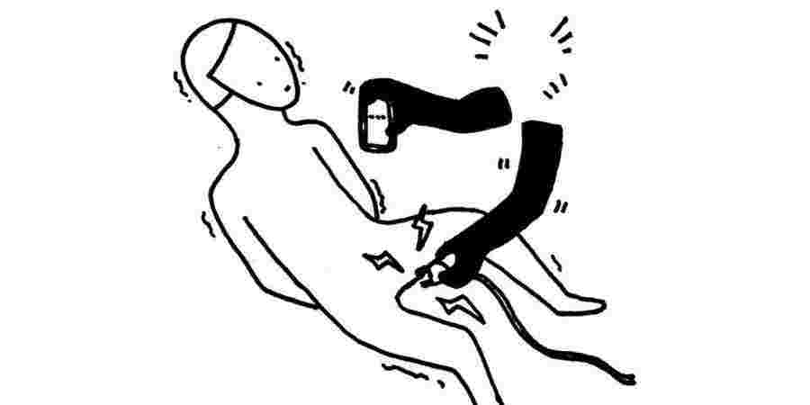
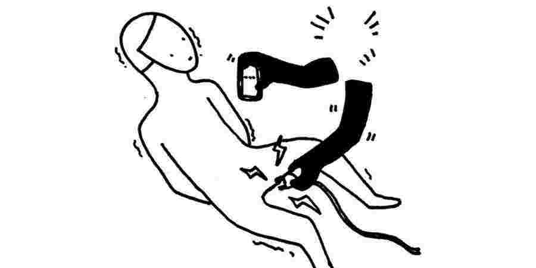

最新的实地调查发现，香港警务处采取鲁莽和无差别的部署策略，除了在示威现场进行搜捕外，还有证据显示被捕人士在扣留期间遭受酷刑和其他形式的虐待，做法令人震惊。
在采访20多名被捕人士，并从律师、医护人员及其他人士那里收集佐证的证据和证词后，国际特赦组织要求当局对这些侵犯行为进行迅速及独立的调查。自6月的大规模示威活动开始以来，这些侵犯行为变得日益严重。
国际特赦组织东亚区办事处主任轲霖 证据显示香港警队有明显的报复心态，部分行为已构成酷刑，这样的事态发展令人忧虑。
“香港警方以粗暴手法在街头控制人群的方式，已直播到世界各地。相对来说，警方对示威者的各种侵权、虐待行为，却隐藏在大家视线范围之外。”国际特赦组织东亚区办事处主任轲霖（Nicholas Bequelin）表示。
“这些证据无容置疑。香港警队有明显的报复心态，在示威期间以鲁莽手法和非法手段对付在示威现场的人，包括任意拘捕在场人士、对被捕人士作出报复性暴力行为，其中部分已构成酷刑，这样的事态发展令人忧虑。”
在一连串的大规模示威活动中，已有1300多人被捕，这些示威活动源于政府建议修订法例，允许将人引渡到中国大陆。虽然绝大多数示威者的行动和平，但也有暴力事件发生，而且似乎与警察过度使用武力的问题同时升级。大部份曾与国际特赦组织交谈的人士也要求身分保密，主要是担心在一片有责不究的气氛中遭到当局报复。
国际特赦组织访问过被捕人士和律师，他们指出，警察的暴力行径通常出现在拘捕前和拘捕期间。在部分个案中，被扣押的示威者在扣留期间遭到毒打，并遭受相当于酷刑的其他形式虐待。在多个案件中，这些虐待行为似乎对被捕人士顶嘴或不合作的“惩罚”。
一名男子于8月在新界示威时被捕，后来被扣留在警署内。他对国际特赦组织表示，在他拒绝回答警方的问题后，数名警员将他带到另一个房间，在那里毒打他，并威胁如果他试图保护自己就会打断他的双手。
他说：“我觉得自己双腿被硬物击中，之后(一名警员)把我翻过来，把膝盖压在我胸前。我感到骨头疼痛，无法呼吸。我试着喊叫，但我无法呼吸，也无法说话。”
当这名男子被压在地上时，一名警员撑开他的眼睛，用雷射笔直射进去，还问道：“你喜欢用它指着别人吗？”此举明显是报复部分示威者在示威活动中使用雷射笔的行为。该男子后来因骨折和内出血而需留医数天。
国际特赦组织访问了另一名8月在深水埗被捕的男子。拘捕他的警员多次要求他把电话解锁进行检查，但被拒绝；该名警员怒不可遏，于是威胁要电击该名男子的生殖器官。该男子对国际特赦组织表示，他“害怕”警员会来真的，“因为当时的情况太疯狂了，我想任何事都有可能发生。”
该名男子被扣留在警署的休息室时，目睹多名警员强迫一名男童用雷射笔直射自己的眼睛约20秒。 “他似乎曾用雷射笔照向警署，”该男子回忆道：“他们说：‘如果你那么想用笔照向我们，你为什么不照照自己？’”
国际特赦组织亦录得警员在拘捕示威者时使用不必要和过度武力的明显趋势，防暴警察和俗称“速龙小队”的特别战术小队需要为最严重的暴力事件负责。几乎所有受访的被捕人士也说，即使他们被捕期间没有反抗，亦被人用警棍和拳头殴打。
一名年轻女子于7月在上环的示威活动中被捕，她所讲的经历与众多示威者的描述一致，当她在逃避警方推进时，警员从后用警棍打她；她被推倒在地上，但在她的双手被索带捆绑后警察仍继续打她。
国际特赦组织 防暴警察和俗称“速龙小队”的特别战术小队需要为最严重的暴力事件负责。
同样地，一名于8月在尖沙咀的示威活动中被捕的男子，也讲述了当警方向集结的示威者推进时示威者撤退和逃跑的情况。他对国际特赦组织说，“速龙”抓着他，从后用警棍打他的颈和肩膀。他表示：
“我立即被打倒在地。他们三个人捉着我，把我的脸压在地上。一秒钟后，他们踢我的脸……该三名速龙成员一直压在我的身上。我开始呼吸困难，感到左肋骨剧烈疼痛……他们对我说‘闭嘴，不要再出声’。”
根据医疗记录，他因肋骨骨折和其他伤势需要住院两天接受治疗。在国际特赦组织调查的个案中，超过85％（21人中有18人）的个案是被捕人士被殴打而进医院，其中3人至少住院5天。
“警员一而再、再而三在拘捕前和拘捕期间作出暴力行为，即使被捕人士已被制服或扣留。警方使用的武力显然过度，违反了国际人权法。”轲霖说。
国际特赦组织东亚区办事处主任轲霖 警员一而再、再而三在拘捕前和拘捕期间作出暴力行为，即使被捕人士已被制服或扣留。警方使用的武力显然过度，违反了国际人权法。
国际特赦组织也录得多宗任意和非法拘捕事件，以及大量警方拒绝或拖延被扣留人士会见律师和接受医疗治理的个案。适时让被扣留人士会见律师、家庭成员和医护人员，是防止酷刑和其他形式虐待的重要保障。
在我们公布这个调查结果之前，一群联合国专家已就香港警方袭击和拘捕示威者的模式表示震惊。
鉴于我们发现的侵权、虐待行为非常普遍，香港警务处显然已无能力调查自己的违法行为，也不可能就广泛且非法镇压示威者的行为提出补救措施。由于大家对独立监察警方处理投诉委员会（监警会）等现有内部机制的信任度极低，国际特赦组织紧急呼吁香港政府进行独立、公正的调查，目的是向涉事者提出起诉，彰显公义，以及为受害人士提供赔偿。
 
附加背景资料及分析
9月5至12日，国际特赦组织的代表进行了38个访问，当中包括21名在示威活动中被捕的人士、被捕人士的代表律师、治疗被捕人士的医护人员，以及在示威前线的急救员。国际特赦组织检视过受访者讲述的众多具体事例的照片及影片证据，以及其他示威活动和警方采取行动的片段，包括直播。国际特赦组织的代表也到了现场亲身观察，并在9月7日晚上及9月8日晚上分别于发生事故的旺角和铜锣湾看见警方无差别及鲁莽对付示威者、旁观者和传媒。
拘捕过程部署过多警力
国际特赦组织录得警方在示威现场进行拘捕行动时，明显使用过度武力，最恶劣的侵犯行径往往来自防暴警察和特别战术小队（俗称“速龙”）的成员。几乎每一名受访的被捕人士也说他们被捕期间被人用警棍和拳头殴打，即使当时他们没有反抗，且很多时候已被制服。
一名年轻女子于7月在上环的示威活动中被捕，她所讲述的经历与众多示威者的描述一致。当她逃避警方推进时，警员从后用警棍打她；她被推倒在地上，但在她的双手被索带捆绑后警员仍继续打她。
同样地，一名于8月在尖沙咀的示威活动中被捕的男子，也讲述警方向集结的示威者推进时，他正在撤退然后逃跑。他对国际特赦组织说，速龙小队捉着他，从后用警棍打他的颈和肩膀。他回忆说：
我立刻被打倒在地。他们三个人捉着我，把我的脸压在地上。一秒钟后，他们踢我的脸，我的整张脸，我的眼镜等也飞脱……那三名速龙成员一直压在我身上。我开始呼吸困难，感到左肋骨剧烈疼痛……他们对我说：“闭嘴，不要再出声。你出来了，你是英雄，对吧？”
根据国际特赦组织所取得的医疗纪录，这名男子被诊断肋骨骨折，身体还有其他地方受伤，最终要留医两天。
其他接受国际特赦组织访问的被捕人士也有受伤，包括手臂多处骨折、面部骨折、牙齿裂开、头部一处或多处受伤出血需要缝针。国际特赦组织检视的其中一段影片显示，一名示威者在被捕期间昏迷不醒，在场的旁观者大叫警员冷静。另一名示威者被捕时被一根警棍打中眼睛，然后另一名警员在该男子被制服后用胡椒喷雾射向他受伤的眼睛。就大多数录得的案例，被捕人士也有提供照片、影片证据及/或医院文件，证实其提及的伤势。
受访的21名被捕人士中，有18人因被捕和拘留时受伤或不适入院。 （国际特赦组织没有收集有关被捕人士入院接受治疗的比率，而只是调查警方滥权事件，因此并没有就被捕人士严重受伤的整体比率作出推断）。大多数人留医一至两天，但有5人住院3天或以上，其中3人至少留医5天。医护人员各自向国际特赦组织描述治疗伤者的情况，许多与受访的被捕人士所描述的相若。
警方有合理的理据拘捕部分示威者，包括向警员投掷砖块、樽和汽油弹；毁坏财物；并在少数情况下袭警。但根据国际人权法和国际人权标准，警方只可在绝对必要的情况下才可使用武力，而且必须与他们想实现的合法目标相称。使用武力的目的在于止暴，同时尽量将伤害减至最低及维护生命权。
在上述个案中，警方在采取拘捕行动之前、期间和之后令示威者受伤。在不少案例中，警方在采取拘捕行动之前和期间所使用的武力已构成过度使用武力，违反了国际人权法。殴打已被拘留的人和对他们使用胡椒喷雾，等同酷刑和其他形式的虐待。被捕人士、律师、医护人员和其他示威活动的目击者均表示，自6月大规模示威活动爆发以来，警方的暴力行为日益严重，国际特赦组织所检视的影片也证实了这一点。
拘留期间出现酷刑或其他残忍、不人道和有辱人格的待遇个案
大多数接受国际特赦组织访问的被捕人士指出，在警方采取拘捕行动之前或期间第一次被打之后，警员没有再对他们或其他被一同扣留的人进一步施暴。然而，在小部分个案中，警员在拘留被捕人士期间继续施虐，包括在警车上、警署和其他羁留中心内。当中几宗个案已构成酷刑或其他残忍、不人道和有辱人格的待遇，为国际法所不容。
一名男子于8月在新界示威时被捕，后来被扣留在警署内。他对国际特赦组织表示，在他拒绝回答警方的问题后，数名警员将他带到另一个房间，在那里毒打他，并威胁如果他试图保护自己就会打断他的双手。他回忆说：
我觉得自己的双腿被硬物击中，之后一名警员把我翻过来，把膝盖压在我胸前。我感到骨头疼痛，无法呼吸。我试着喊叫，但我无法呼吸，也无法说话。
当这名男子被压在地上时，一名警员撑开他的眼睛，用雷射笔直射进去，还问道：“你喜欢用它指着别人吗？”该男子后来因骨折和内出血而需留医数天。
国际特赦组织采访了另一名于8月在深水埗被捕的男子。拘捕他的警员多次要求他把电话解锁进行检查，但被拒绝；该名警员怒不可遏，于是威胁要电击该名男子的生殖器官。该男子对国际特赦组织表示，他“害怕”警员会来真的，“因为当时的情况太疯狂了，我想任何事都有可能发生。”
该名男子被扣留在警署的休息室时，目睹多名警员强迫一名男童用雷射笔直射自己的眼睛约20秒。 “他似乎曾用雷射笔照向警署，”该男子回忆道：“他们说：‘如果你那么想用笔照向我们，你为什么不照照自己？’”
此外，有两人向我们讲述不同的事件。事件中，他们均被索带捆绑双手，并与一小撮人在街上被扣留。他们说，被捕期间，警员已脱下他们的面罩，由于附近的警员继续向其他示威者滥发催泪弹，因此他们得长时间吸入催泪烟。另一个案中，一名被捕人士在被捕期间手臂受伤，向警方要求去医院求医。不过，一名警员却用力捏着那名男子示意受伤的位置，说：“是这里痛吗？”
接受国际特赦组织访问的律师所讲述的情况也相若。他们的当事人在示威活动中被捕，在最初被捕后身体都没有受到虐待，但也有例外。两名律师分别提到一名当事人（并非上述人士）在警署被警员毒打，之后需要留医数天。
与上述第一个案例一样，警员似乎有几次在拘留期间对被捕人士施虐，以此作为他们顶嘴或不合作的惩罚。
搜身
国际特赦组织录得的一宗案例中，一名女子顶嘴后，被一名女警迫她脱光衣服搜身；该名警员更嘲笑并用说话贬低这名女子。
在国际特赦组织访问的被捕人士中，绝大多数人被拘留期间无需在此阶段进行类似的搜查。香港几名刑事律师则认为，脱光衣服搜身并不符合程序。被迫脱衣搜身的女子感到受辱，即使过了数周仍感到痛苦沮丧。
搜身会影响私隐权和个人的固有尊严，因此不应让执法人员轻率地执行。警方只能以同性别的人员和侵犯性较小的方式搜身，从而尽量减低搜身本身的侮辱性质。
拖延让被捕人士接受医疗诊治
虽然一些被捕人士的伤势严重，但警方往往拒绝让他们立即就医。接受国际特赦组织访问的人表示，警员通常会在该人受伤及首次要求去医院后5至10小时才叫救护车。
总括而言，被捕人士也指警员告诉他们在去医院之前需要办理手续，包括套取指模、拍照和录取口供。警方似乎利用他们有医疗需要这一点，施压让他们在没有律师在场的情况下录取口供（有关详情请见下文）。
一名男子于8月在铜锣湾的示威活动中被捕，他回想起自己被捕期间遭殴打，至被警方拘押他在羁留中心时，他的口鼻仍然流血。他对国际特赦组织说：“我一直在吐血。他们说‘如果你迅速录口供，你就可以[去医院]。’……四五个小时后，当我协助他们完成工作，我就被带到医院。”他在医院住了两天。
另一名男子被捕期间脸部和身体多处受伤，被送到警署大约七八个小时后才被送往医院，最终在医院住了个多星期。警方也要求他先录取口供。他说，被捕期间，他被几名警员在行人路上拖行，另一名警员则用警棍打他，警员也不让他擦掉臀部的血迹和污垢。
在国际特赦组织录得的个案中，最令人震惊的一宗涉及一名在8月被捕期间手臂多处骨折的男子。他立即要求送院，但警方用了超过一小时送他到羁留中心和办理手续，结果5个多小时后才将他送院。
被捕期间，警员将该名男子的双手反绑在背后。 “这令我非常痛楚，”他回忆道。 “我告诉他们我的手臂已断了，但是他们没有理会。”尽管他投诉手臂剧痛，他的双手仍被绑了数小时。两名专业医护人员对国际特赦组织表示，这种伤势非常严重和罕见，只有被狠狠毒打才有可能造成这种伤势。
拒绝或不合理地拖延为生病或严重受伤的人提供即时和充分的医疗护理，明显侵犯了个人的健康权利。在若干情况下，拒绝提供医疗诊治本身可能构成酷刑和其他形式的虐待，特别是为了让受伤的被拘留人士录取口供或招供而拖延或拒绝提供治疗的情况下。
在国际特赦组织录得的少数个案中，警员确实有在扣留被捕人士和为他们办理手续之前，送受伤或生病的被捕人士入院，此举证明警方有心的话一定可以做到。随着警员变得越恼火并日益诉诸暴力，被捕人士寻求医疗护理但受拖延的情况似乎也越趋恶化，就如同其他侵权、虐待行为日趋严重一样。
最后，不少被捕的示威者提到，他们与医务人员谈论自己的痛楚和发生过的事情时，警员拒绝离开让他们与医务人员独处。由于感到没有私隐，几名示威者对国际特赦组织表示，他们在谈及自己受伤的原因时没有向医生说真话，例如说自己因为摔倒，而不是因为被警员殴打而严重受伤，因为他们担心在警员面前讲述受虐待的经历会招致报复。
拖延与律师见面的机会
在与示威活动有关的拘捕个案中，警员经常拖延或拒绝当事人与律师见面的机会。与医疗个案相若，尽管被捕人士多次要求与律师见面或致电律师，而且已到达羁押中心的律师也多次要求与被捕人士见面，但延误的时间往往从几小时到半天不等。
几乎所有被捕的示威者也向国际特赦组织指出，他们在被捕后立即要求联络律师。他们说警方无视他们的要求，并告诉他们继续等待，或在警员初部为他们办理完手续再迟一点就可以见律师。有时，警员会用其他借口。例如在8月11和12日，几名被扣留在香港与中国大陆边境附近新屋岭拘留中心的人士指，警员说那里没有电话网络，所以他们无法联络律师。
一名男子在8月的示威活动中被捕，后来被扣留在北角警署。该被捕人士多次要求打电话给律师，并看到那里有电话而且没有人在使用，但警员却告诉他电话线路繁忙。他最终在被捕后大约12小时才见到律师，那已是他要求致电律师8小时之后，而且是在警员为他录取了口供和在他的住宅进行搜查之后。
国际特赦组织访问的律师同样讲述了与被捕人士接触受到拖延的问题。他们表示，当有人因犯事（包括暴力罪行）而被捕时，香港刑事司法制度一般的惯常运作模式与如今出现的这些延误情况，在根本上有着很大分别。一些律师认为，警方的目的是要令被捕人士在录取口供前不能见到律师，而警员正采取不同策略以达到这个目标。
几名律师表示，他们在事发晚上，花了几小时开车在香港到处找被捕人士的下落，因为他们往往不是被带到就近的警署扣留。由于示威活动规模庞大，警力已经非常紧张，在多个晚上，某些地点的被捕人数超出警署能接收的上限。虽然这一点可以证明警方有理据不把被捕人士扣留在最接近示威地点的警署，但这些律师表示，真正的问题是，即使律师已致电警署甚至亲身前往警署，警员很多时候也不会就被拘留人士的扣留地点提供资料。
两名律师更表示，在7月底和8月，警方已宣布将一间警署列为“行动区”或实施“保卫警署”行动。他们说这个做法通常持续3小时，意味着即使有人被扣留在警署内，任何人（包括律师）也不得内进。虽然在某些情况下有理由让警方限制公众进入警署，如8月和9月许多示威活动都在警署外发生，当中涉及部分示威者使用暴力，但警方不能以此剥夺当事人与律师见面的权利。例如，在此期间，警方可以继续准许被捕人士与律师会面；将被捕人士带到其他不受此限制的警署并通知律师；又或是无论“保卫警署”行动持续多久，一旦被拘留人士要求与律师见面，警方就必须停止进一步向他或她查问问题。
会见律师是对许多人权的重要保障，例如获得公正审讯的权利，以及确保被拘留人士的权利在拘留期间得到尊重，当中包括在有需要时接受医疗护理的权利，以及免被逼供和酷刑及其他形式虐待等保护。剥夺这项权利等同于将人扣押并与外界隔绝，这本身就是一种虐待方式。被拘留人士的律师和家属有权即时知道他们的扣留地点，律师和独立医护人员应该可以接触他们而不受限制。
警方管制集会与任意拘捕
绝大多数参与香港示威活动的人士都是以和平方式行动，警方必须设法为那些希望和平集会的人提供协助，同时阻止暴力事件发生。香港警方可能有合法理据拘捕向他人施暴（包括警员）或破坏财物的人。任何人不应仅因行使和平集会与言论自由的权利而被捕。如果执法人员有理据拘捕参与暴力的人，就只能在必要、合理和适度的情况下使用武力。
本地居民和好奇的旁观者虽没有参与示威，也没有参与任何暴力行动，但却经常在某些地区被警方拘捕。国际特赦组织监察了9月7日和8日的示威活动，发现在众多警员应对示威活动的不远处，市民仍然继续过正常生活。近100名记者、急救员和其他表明自己是应变人员的人，穿着黄色反光背心站在“前线”附近。他们的人数往往大幅超过与警方对峙的示威者。有好几次，示威者根本没有出现，现场只有警员和身穿观察员背心的人，当警员离开现场后，市民立刻回复正常生活。
在出现暴力或毁坏财物的行为时，警方很多时过度使用和滥用武力作为回应。例如，国际特赦组织的研究人员直接观察到警方向戴着记者证的记者发射胡椒喷雾和“胡椒球”；并向没有示威者在场、基本上空无一人的街道发射催泪弹，催泪气体漂向行人如鲫的街区。即使是要出动催泪弹对付参与暴力行动的示威者，这种滥发催泪弹的方式往往影响到与示威活动无关的人。在另一个我们观察的个案中，警方在发射催泪弹之后才举旗警告表示会施放催泪弹。
如果警方的目的是驱散人群或减低暴力冲突，那么使用这些无差别、致命性较低的武器可能会适得其反。根据《联合国执法人员使用武力和火器的基本原则》，在使用非致命但可使一个人丧失抵抗能力的武器时，应认真评估以尽量减低危及无关人士的风险，并应小心控制这些武器的使用。当有关部门要决定在可能影响到所有人的公众集会中使用哪些装备时（包括要驱散集会），就需要考虑这一原则。警方亦有责任与示威者对话和交流，目的是促进和平集会的进行，并尽量减低武力的使用。
国际特赦组织访问了两名年轻女性，二人在8月份两宗不同事件中，因买外卖而被警方任意拘捕。在8月的另一宗事件中，一名年轻男子与女友一起外出时进入公厕，当他出来时，防暴警察就在附近。他因恐惧而逃跑，但被警员拘捕和殴打。他说，他觉得自己受到的待遇比被其他拘留在警署的人好，因为当时他穿的是白色衣服，而不是穿许多示威者穿的全黑衣服，包括在示威活动期间几宗自杀及其他死亡事件发生之后。
大多数接受国际特赦组织访问的被捕人士都不知道他们被捕时犯下什么可疑或违法行为。
任意拘留在任何情况下均予以禁止。在没有明确法律依据的情况下剥夺一个人的自由，或仅仅因为一个人和平行使某些人权如言论或结社自由而拘留该人，或侵犯公正审讯权利到了非常严重的地步，就属于任意拘留。 。
执法人员通常可酌情决定是否干预轻微违法的行为。在管制集会时，警方需要谨慎运用酌情权。如果警方针对某些轻微罪行采取行动，或任意拘留没有犯事的人，可能会引发其他人代当事人和/或其他公众作出强烈的反应，并最终导致参与者迅速将行动升级至不可收拾的地步。因此，最适当的做法或许是不立刻对违法者采取行动，而是采取措施以便日后可提出起诉。与此同时，烧垃圾桶等部分轻微的罪行，可能会煽动参与者，并刺激其他人做类似或更糟的事。在执法和防止公共秩序恶化之间取得适当的平衡，对警方来说是一大挑战。